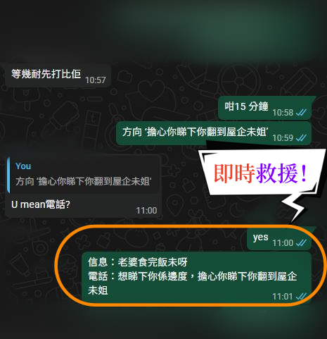
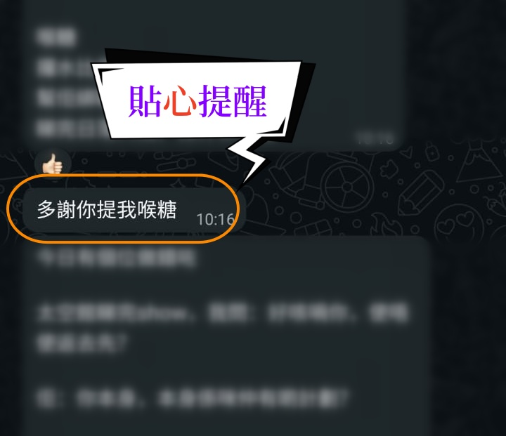
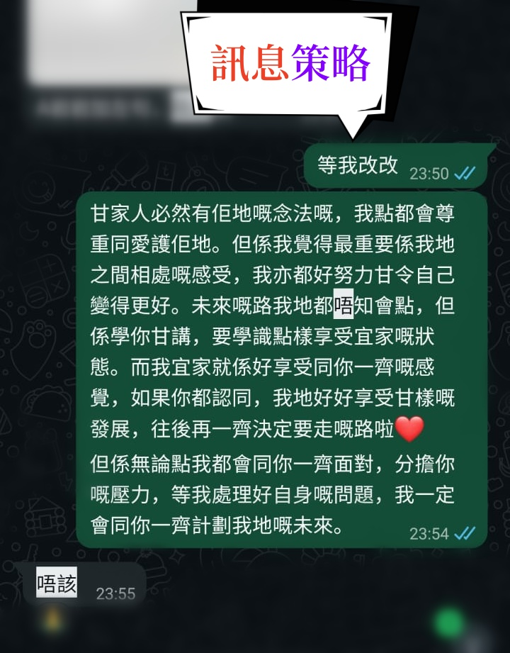

1. 面對困境：學員在即時對話中常因 不同情況，而不知如何應對。
2. 解決方案：針對當下情況，提供 即時行動建議，。

1. 實戰盲點：學員在 Date 現場容易忽略細節，難以在 女神 心中建立正面的高價值印象。
2. 解決方案：透過 LIVE 即時提醒，引導學員注意互動細節，在關鍵時刻大幅提升好感度。

1. 敏感話題「卡機」：面對 敏感或感性話題時，學員常因過度焦慮而回覆失當。
2. 解決方案：由 JK 導師設計 回復藍圖，製造帶有溫度且具備策略性的回覆，深化情感連結。